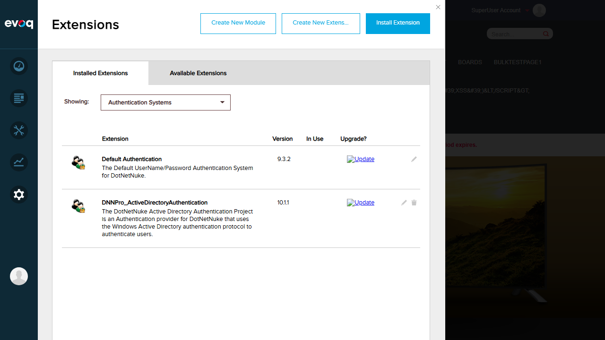
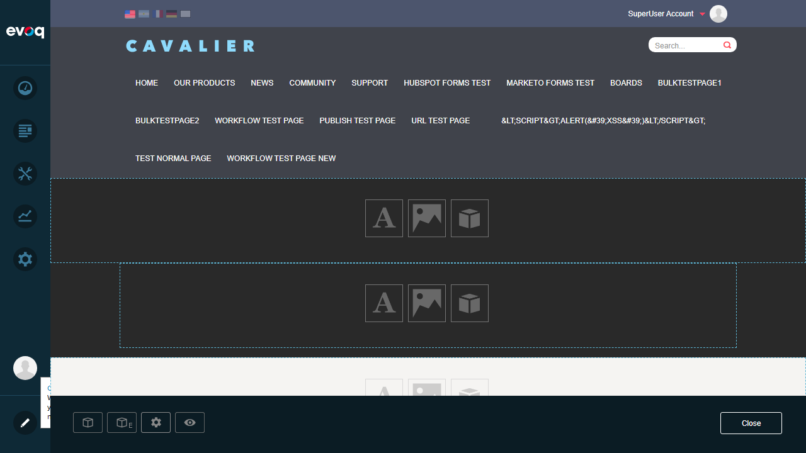

Monitors and reports Active Directory connection status and availability. When AD authentication settings are saved, the system displays status information for:
Global Catalog Status - Checks if ADSI network is accessible
Root Domain Status - Validates root domain entry connectivity
LDAP Status - Verifies LDAP accessibility
Network Domains Status - Lists detected network domains and counts
UI Location: Admin > Extensions > Authentication Systems > Active Directory > Settings (Status display)
Code Analysis Summary
The Network Status Monitoring feature is implemented in the following files:
File
Method
Description
ADSIProvider.cs
GetNetworkStatus()
Returns formatted HTML with Global Catalog, Root Domain, LDAP, and Network Domains status
AuthenticationController.cs
NetworkStatus()
Calls the provider's GetNetworkStatus() method
Settings.ascx.cs
UpdateSettings()
Displays localized status message after saving AD configuration
Located DNNPro_ActiveDirectoryAuthentication extension (version 10.1.1)
Attempted to click edit/pencil icon on the extension
Expected Result: AD authentication settings panel should open, allowing configuration of AD settings and displaying Network Status after save.
Actual Result: Clicking the edit icon on the extension opens a "Delete Extensions" dialog instead of the settings panel. The Persona Bar Extensions interface does not provide access to edit authentication provider settings.

Screenshot: Extensions page showing Authentication Systems with DNNPro_ActiveDirectoryAuthentication
Test 2: Access AD Settings via Admin Page
FAIL
Steps Taken:
Navigated directly to http://localhost:8081/Admin/ActiveDirectory
Page loaded with title "Portal Administration"
Enabled Edit mode to inspect page content
Examined all content panes for AD module
Expected Result: The Admin/ActiveDirectory page should display the Active Directory authentication settings module with options to configure AD settings and view Network Status.
Actual Result: The Admin/ActiveDirectory page is empty - it contains only empty content panes with no Active Directory module installed. The settings UI is not accessible.

Screenshot: Admin/ActiveDirectory page in edit mode showing empty panes with no AD module
Test 3: Verify Network Status via Settings > Security
FAIL
Steps Taken:
Navigated to Settings > Security > Authentication
Reviewed Basic Login Settings tab
Checked "More" tab for additional settings
Searched for AD-specific configuration options
Expected Result: The Security > Authentication section should provide access to AD authentication provider settings including Network Status display.
Actual Result: The Security > Authentication section shows only general login settings (Default Authentication Provider, CAPTCHA settings, etc.) but does not provide access to AD-specific settings or Network Status monitoring.
Test Summary
Total Tests:
3
Passed:
0
Failed:
3
Overall Result:
FAIL
Observations
Code Verification: The Network Status Monitoring feature is fully implemented in the codebase. The GetNetworkStatus() method in ADSIProvider.cs returns comprehensive status information about AD connectivity including Global Catalog, Root Domain, LDAP, and Network Domains status.
UI Accessibility Issue: The UI to access and configure AD authentication settings is not accessible in the current site configuration:
The Persona Bar Extensions manager only provides Delete functionality for authentication systems, not Edit/Settings
The Admin/ActiveDirectory page exists but has no AD module content installed
Settings > Security > Authentication does not expose AD-specific settings
Feature Trigger: According to code analysis, the Network Status is displayed when the user saves AD authentication settings in Settings.ascx.cs:UpdateSettings(). The status appears as a green success message or red error message depending on whether "fail" is detected in the status output.
Dependency: Testing this feature requires:
Active Directory infrastructure available on the network
The Authentication module properly installed on an admin page
Proper IIS configuration for Windows Authentication (currently showing 500.19 error on WindowsSignin.aspx)
Configuration Issue: An IIS configuration error (500.19) was observed when accessing WindowsSignin.aspx, indicating Windows Authentication may not be properly configured at the server level.
Recommendations
Install the Active Directory Authentication module on the Admin/ActiveDirectory page to enable access to settings
Fix the IIS configuration for Windows Authentication (error 500.19 on WindowsSignin.aspx)
Consider adding a direct link to AD authentication settings from the Extensions page or Security settings
Once the UI is accessible, re-test Network Status Monitoring with valid and invalid AD configurations